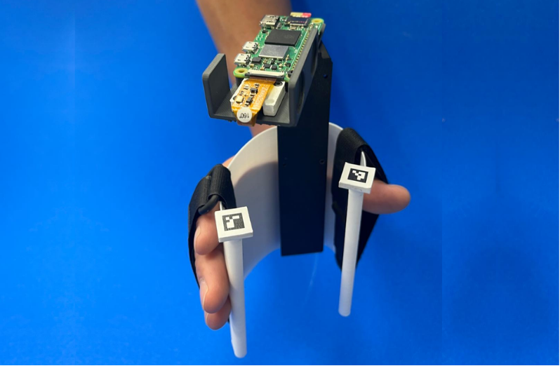
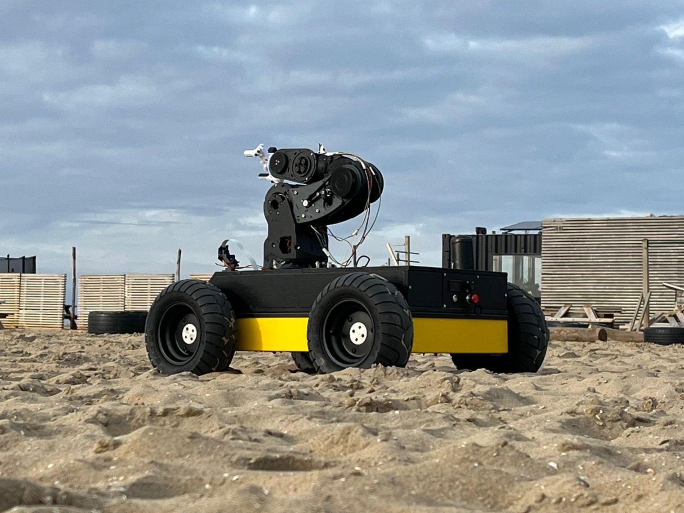
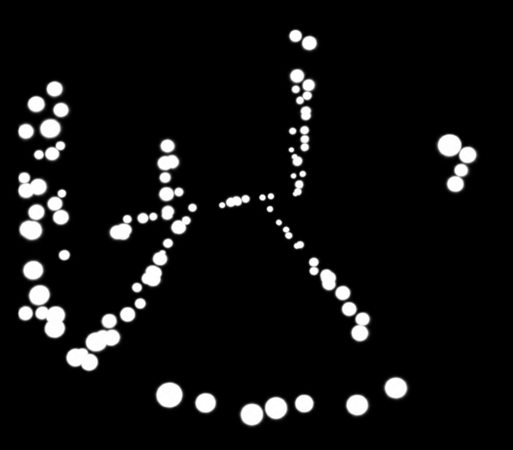
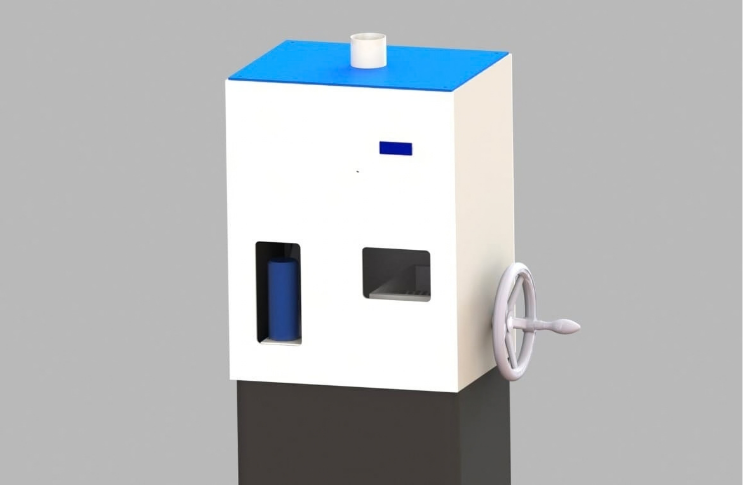
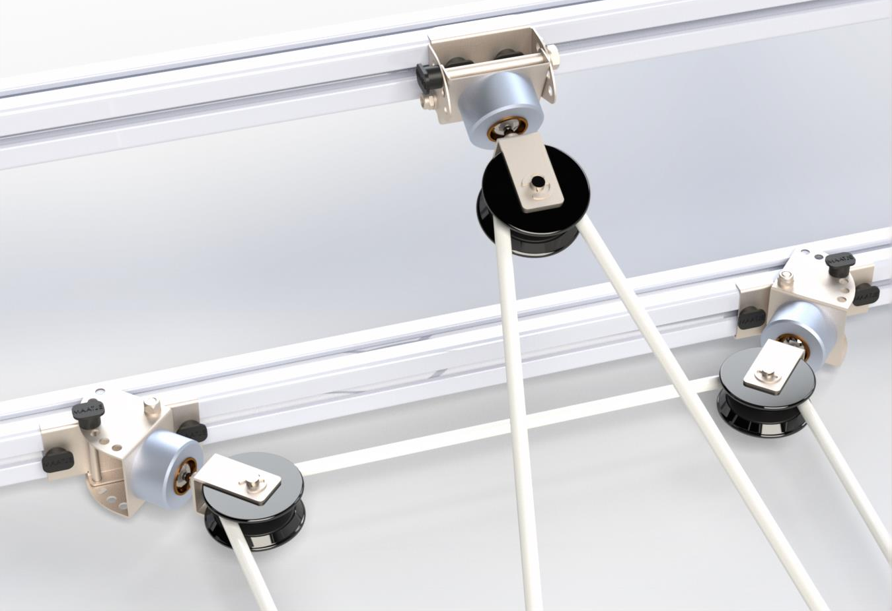

Stijn Bier
Robotics Engineer
MSc Robotics · BSc Mechanical Engineering · TU Delft
I enjoy working on technical projects that combine mechanics, electronics and software. What I like most is understanding how things work, turning ideas into something tangible and improving them through testing and experimentation. I enjoy doing this most in a friendly team environment.
Selected work
Projects
Robotics, mechanical design, computer vision, embedded systems and rapid prototyping.

Camera-Based Hand-Trainer Motion Tracking
MSc thesis: a low-cost onboard tracking system for measuring compliant hand-trainer motion in real time.
View project →
Project BB (VR-Controlled Beach Robot)
Remote robot platform combining VR teleoperation, camera feedback, a robotic arm and onboard safety sensing.
View project →
Phosphoenix Vision Pipeline
Custom-trained segmentation and visual-processing pipeline for navigation-oriented phosphene representations.
View project →
Can Crusher
Compact automated can-processing prototype combining sensing, motor control, UI and a custom sorting mechanism.
View project →
MATE Pulley System Redesign
Bachelor End Project: redesign and validation of a 3-DOF pulley system for a tendon-based gait rehabilitation device.
View project →About
About me
I was born in Groningen, where I initially started studying Industrial Engineering and Management. Although I found parts of the programme interesting, it was quite theoretical and strongly focused on the business side of engineering. I missed working on real technical projects and wanted to spend more time designing, building and testing things myself.
After a year, I moved to Delft, where I completed a BSc in Mechanical Engineering followed by an MSc in Robotics at the technical. I lived in Delft for five years and have since moved to Rotterdam.
In my free time, I like tinkering with electronics, mechanical devices and small software projects. I enjoy taking apart broken devices, figuring out how they work, repairing them when possible, and reusing components for other ideas or prototypes. Outside engineering, I also enjoy sports and staying active.
Contact